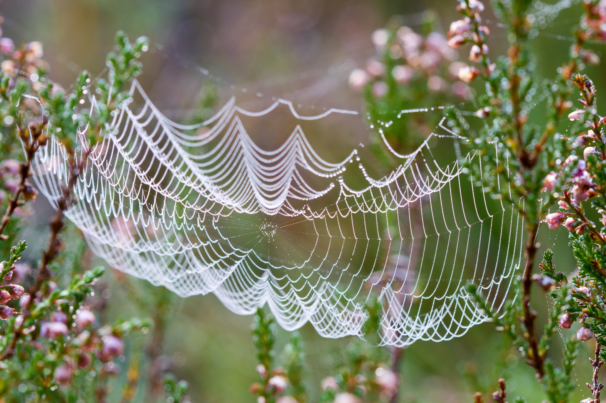

If You Wish to Live and Thrive, Let the Spider Run Alive
A spider spins it's silky thread to weave a picturesque web. The web starts out as just one fine line, but have faith and give it some time. As time goes on you'll see, the glittering dew. It dusts the thread in the morning sun, and helps you see what has begun.
Creepy Crawlies
Spiders crawling evoke a peculiar blend of fascination and trepidation. Their agile movements, with delicate yet purposeful steps, showcase the incredible intricacy of nature's design. Each leg, covered in fine hairs and equipped with tiny claws, allows them to navigate diverse terrains effortlessly. As they traverse their silken threads or skulk silently across surfaces, the grace and precision of their locomotion are a testament to their predatory prowess. However, for some, the sight of spiders crawling can also stir a sense of unease , triggering primal instincts that hark back to our ancient ancestors' survival instincts, a reminder of the delicate balance between nature's wonders and our instinctual fears.
Arachnophobia
Arachnophobia is a gripping and irrational fear of spiders that can evoke intense anxiety and panic in those who suffer from it. This phobia, one of the most common specific phobias, transcends the mere dislike or discomfort that many people may feel toward these eight-legged creatures. For arachnophobes, the sight of a spider, its webs, or even just the thought of encountering one can trigger a visceral response, including elevated heart rate, trembling, and a strong desire to flee. This fear often stems from deep-rooted evolutionary instincts, where our ancestors may have learned to associate spiders with potential danger. However, it's important to note that most spiders are harmless to humans, and treatment options like cognitive-behavioral therapy can help individuals manage and overcome their arachnophobia, allowing them to lead more comfortable lives free from the grip of this fear

What a lovely little trap. Will you get caught?